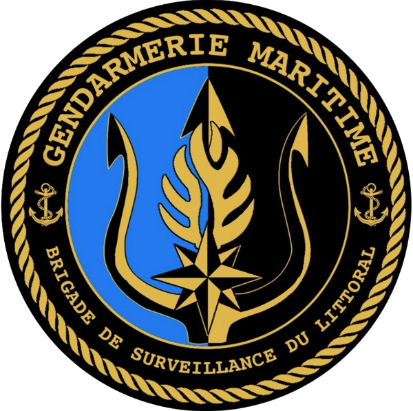
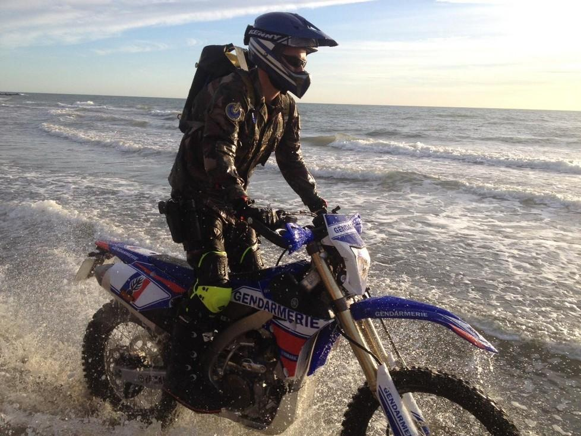

Brigade de surveillance du littoral de Marseille

Missions :
La brigade de surveillance du littoral a pour responsabilité la : - Police de la navigation (commerce, plaisance, pêche...), - Police des pêches (protection de la ressource halieutique: contrôle des restaurants, poissonneries, criées, navires de pêche...), - Police en mer (contrôle des navires, surveillance en mer...), - Police de l’environnement marin (protection des espaces et espèces protégés, pollutions, activités prohibées en mer...),
Moyens :
- Mobilité : Véhicules : - 1 VLTT 4x4 FORD RANGER, - 1 VL RENAULT Mégane. Motocyclettes : - 2 YAMAHA 1200 XTZ – Super Ténéré, - 2 YAMAHA 900 TDM, - 2 YAMAHA 250 WR (TT). Moyens nautiques : - 1 Embarcation type semi-rigide de marque SILINGER avec moteur 200 Cv (EFR-NG), - 1 remorque embarcation. - Divers : - Matériels optiques (appareils photo, intensificateurs de lumière, jumelles...), - 1 remorque motocyclettes.
Effectifs :
- 9 personnels : 7 Sous-officiers, 2 Gendarmes adjoints volontaires. - Police Judiciaire : OPJ : 6 personnels. La plus part des sous-officiers ont les spécialités/formations suivantes : - Pilotes d’embarcation : Pilote d'Embarcation Gendarmerie niveau 2 (PEG.2). - Motocyclistes. - Police en mer. - Police des pêches. - Téléopérateur de drone : 1 personnel.